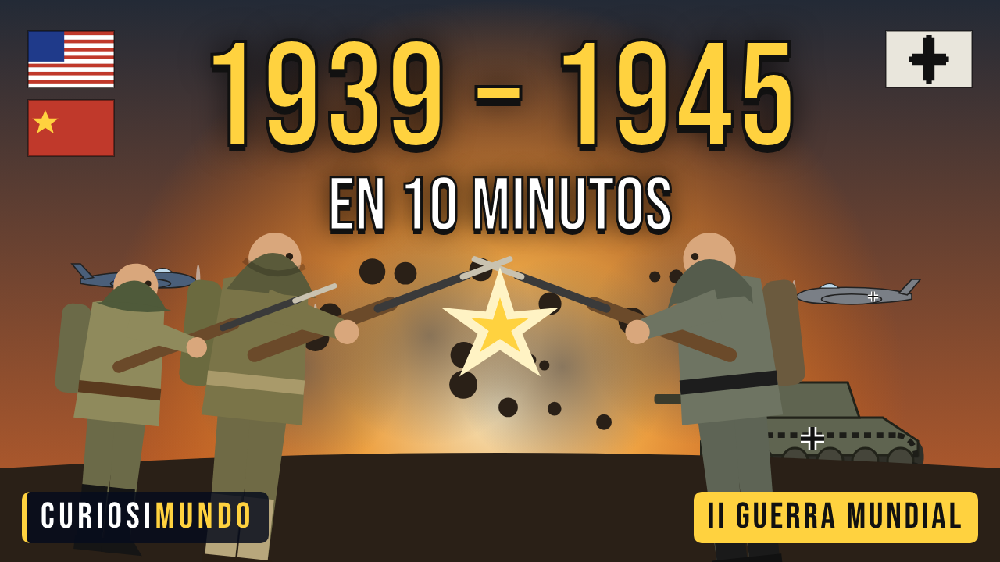

<!doctype html>
<!--
  CURIOSIMUNDO · 04 · La Segunda Guerra Mundial en 1 minuto (TikTok, 9:16, 54,5 s) — resumen del vídeo de YouTube.
  Formato: titular grande arriba, escenas 16:9 del vídeo largo en la franja central (reutiliza lib/cm.js: uniformes,
  batallas que terminan en captura o con la posición tomada y su bandera, sin sangre; mapas), subtítulos grandes palabra a palabra.
  Reglas: "70–85 MILLONES DE MUERTOS" en el fotograma 0, cambio cada 2–4 s, pregunta final + llamada al vídeo de YouTube.
-->
<html data-width="1080" data-height="1920" data-fps="30" data-duration="54.5" data-safe-zone="reels">
<head><link rel="stylesheet" href="lib/cm.css"><script src="lib/cm.js"></script>
<style>
  body { background: radial-gradient(1200px 1400px at 50% 40%, #163a78, #071330 75%); }
  #band { position:absolute; left:0; top:560px; width:1920px; height:1080px; transform: scale(.5625); transform-origin: 0 0; overflow:hidden; z-index:2; }
  #frame { position:absolute; left:0; top:556px; width:1080px; height:616px; border-top:4px solid #FFD23F; border-bottom:4px solid #FFD23F; z-index:3; pointer-events:none; }
  .ttl { position:absolute; left:40px; right:40px; top:250px; height:290px; display:flex; align-items:center; justify-content:center; text-align:center; z-index:5;
         font: 400 118px/.92 'Bebas Neue'; text-shadow: 0 10px 40px rgb(0 0 0 / .6); opacity:0; }
  .ttl em { font-style:normal; color:#FFD23F; }
  #vcaps { position:absolute; inset:0; z-index:8; pointer-events:none; }
  .vc { position:absolute; left:50px; right:50px; top:1240px; text-align:center; isolation:isolate; font: 850 86px/1.1 Inter; letter-spacing:-.02em; }
  .vc .w { display:inline-block; padding:0 .14em; --hl:0; position:relative; color: color-mix(in oklab, #0B2A5B calc(var(--hl) * 100%), #fff);
           text-shadow: 0 5px 0 rgb(0 10 40 / calc(.7 - var(--hl) * .7)), 0 8px 30px rgb(0 0 0 / calc(.5 - var(--hl) * .5)); }
  .vc .pl { position:absolute; left:0; top:.02em; height:1.08em; border-radius:.22em; z-index:-1; background:#FFD23F; }
  #promo { z-index: 6; }
</style></head>
<body>
<audio src="voz.mp3"></audio>
<audio src="musica.mp3" data-volume="0.5" data-duck="0.4" data-fade-out="1"></audio>
<audio src="sfx.mp3" data-volume="0.5"></audio>
<div id="band">
  <section class="scene" id="map" data-start="0" data-duration="20.4"></section>
  <section class="scene" id="b1" data-start="0" data-duration="5.9"></section>
  <section class="scene" id="tk" data-start="9.6" data-duration="4.1"></section>
  <section class="scene" id="bob" data-start="13.6" data-duration="2.9"></section>
  <section class="scene" id="ph" data-start="20.2" data-duration="2.5"></section>
  <section class="scene" id="us" data-start="22.6" data-duration="2.2"></section>
  <section class="scene" id="stal" data-start="24.7" data-duration="2.6"></section>
  <section class="scene" id="hol" data-start="27.2" data-duration="5.6"></section>
  <section class="scene" id="dd" data-start="32.7" data-duration="2.4"></section>
  <section class="scene" id="ber" data-start="35.0" data-duration="4.5"></section>
  <section class="scene" id="pac" data-start="39.4" data-duration="4.7"></section>
  <section class="scene" id="mis" data-start="44.0" data-duration="2.6"></section>
</div>
<div id="frame"></div>
<section class="scene" id="promo" data-start="46.5" data-duration="8.0"></section>
<div id="titles"></div><div id="vcaps"></div>
<script>
gm.wait(Promise.all([fetch('voz.json').then(r => r.json()), fetch('lib/europa1939.json').then(r => r.json()), fetch('lib/pacifico.json').then(r => r.json())]).then(([words, geo, pac]) => {
  const W = CM.W(words, 0), G = { global: true }, tl = gm.timeline(null, G), C = CM.MAPCOL, $ = id => document.getElementById(id);
  /* titles: one per beat (2–4 s) */
  const T = [[0, '<em>70–85 MILLONES</em><br>DE MUERTOS'], [3.8, '1939 – <em>1945</em>'], [5.9, '1939: <em>POLONIA</em>'], [9.7, 'GUERRA<br><em>RELÁMPAGO</em>'], [11.0, 'FRANCIA CAE EN<br><em>6 SEMANAS</em>'],
    [13.7, 'BATALLA DE<br><em>INGLATERRA</em>'], [16.4, 'OPERACIÓN<br><em>BARBARROJA</em>'], [20.3, '<em>PEARL HARBOR</em>'], [22.7, 'ESTADOS UNIDOS<br><em>ENTRA</em>'], [24.8, 'MIDWAY ·<br><em>STALINGRADO</em>'],
    [27.3, 'EL <em>HOLOCAUSTO</em>'], [29.8, 'UNOS <em>6 MILLONES</em><br>DE JUDÍOS'], [32.8, '1944: <em>DÍA D</em>'], [35.0, 'CAE <em>BERLÍN</em>'], [37.9, '8 · 5 · 1945<br>ALEMANIA <em>SE RINDE</em>'],
    [39.5, 'HIROSHIMA Y<br><em>NAGASAKI</em>'], [44.2, '2 · 9 · 1945<br>JAPÓN <em>SE RINDE</em>'], [46.6, '']];
  T.forEach(([at, html], i) => { const h = Object.assign(document.createElement('div'), { className: 'ttl', innerHTML: '<div>' + html + '</div>' }); $('titles').append(h); if (!html) return;
    const end = T[i + 1] ? T[i + 1][0] : 99;
    if (at === 0) { h.style.opacity = 1; tl.fromTo(h, { scale: 1.15 }, { scale: 1, duration: .5, ease: 'expo.out' }, 0); }
    else tl.fromTo(h, { opacity: 0, y: 90, scale: 1.2, filter: 'blur(10px)' }, { opacity: 1, y: 0, scale: 1, filter: 'blur(0px)', duration: .3, ease: 'expo.out' }, at);
    tl.to(h, { opacity: 0, y: -80, duration: .18, ease: 'power2.in' }, end - .18); });
  /* opening battle: Germans captured */
  CM.battle($('b1'), { id: 'b1', left: 'US44', right: 'DE2', terrain: 'dusk', t0: 0, t1: 5.9, n: 8, falls: [3], mg: true, artillery: [.1, 1.2, 2.4, 3.4], outcome: { type: 'capture', at: 4.2 }, labels: false, pan: [0, -1280] });
  /* map 1939–1941 */
  const m = CM.map($('map'), geo); tl.set(m.g, { x: 960 - 950 * 1.6, y: 540 - 500 * 1.6, scale: 1.6 }, 0);
  m.color(tl, ['ALEMANIA', 'ESLOVAQUIA'], C.central, 0, .01).color(tl, ['FRANCIA', 'REINO UNIDO', 'POLONIA'], C.allies, 0, .01).color(tl, 'URSS', '#9a5a5a', 0, .01).color(tl, 'ITALIA', '#8f3a3a', 0, .01);
  m.line(tl, 'polonia1', W('invadió') - .3, { color: '#E5484D', width: 12, arrow: true, dur: .7 }); m.line(tl, 'polonia2', W('invadió') - .1, { color: '#E5484D', width: 12, arrow: true, dur: .7 }); m.color(tl, 'POLONIA', '#6a4a4a', W('polonia') + .3);
  m.zoom(tl, [1150, 420], 1.3, 16.3, .01); m.color(tl, ['POLONIA', 'FRANCIA', 'PAÍSES BAJOS', 'BÉLGICA', 'DINAMARCA', 'NORUEGA'], C.central, 16.3, .01).color(tl, ['URSS', 'BÁLTICOS'], C.allies, 16.3, .01).color(tl, 'POLONIA', C.central, 16.3, .01);
  ['barbN', 'barbC', 'barbS'].forEach((k, i) => m.line(tl, k, W('atacó') - .3 + i * .4, { color: '#E5484D', width: 14, arrow: true, dur: 1 }));
  /* blitzkrieg + Battle of Britain */
  CM.tanks($('tk'), 6.4, { n: 3, inf: 'DE2', planes: true, ww2: { color: '#5f6450', mark: 'cross', pc: '#7a7f86', pm: 'cross' }, sky: 'linear-gradient(#8fa3b8, #d9cfb4)' });
  CM.dogfight($('bob'), 13.6, { a: { color: '#6b7a5a', mark: 'roundel' }, b: { color: '#7a7f86', mark: 'cross' }, n: 2, downs: [{ side: 'b', i: 0, at: 14.6 }, { side: 'b', i: 1, at: 15.6 }] });
  /* Pearl Harbor */
  const pz = CM.svgIn($('ph'), 'linear-gradient(#8fb8de, #f2d9b0 50%, #3a7ab0 50%, #12385e)');
  CM.mk('path', { d: 'M0 520 Q300 420 600 500 Q900 380 1300 480 Q1600 420 1920 500 L1920 540 L0 540Z', fill: '#4a6a3a' }, pz);
  [0, 1, 2, 3].forEach(i => { const g = CM.mk('g', { transform: `translate(${300 + i * 420} ${640 + (i % 2) * 90}) scale(.75)` }, pz); CM.ship(g, '#5a6270'); });
  const jp = [0, 1, 2, 3].map(() => CM.fighter(pz, '#c9c3a8', 'sun')), pex = [0, 1, 2, 3].map(i => CM.explosion(pz, 330 + i * 420, 620 + (i % 2) * 90, 20.6 + i * .4, 1, 'ph' + i));
  gm.onFrame($('ph'), (l, info) => { const t = info.time; jp.forEach((p, i) => p.setAttribute('transform', `translate(${1900 - (t - 20.0 - i * .25) * 800} ${170 + i * 70}) scale(-.85 .85)`)); pex.forEach(f => f(t)); });
  /* USA */
  const us = CM.svgIn($('us'), 'linear-gradient(#5d7fa6, #d6c9a6)'); CM.mk('rect', { y: 820, width: 1920, height: 260, fill: '#5d6a40' }, us);
  CM.mk('rect', { x: 1520, y: 240, width: 10, height: 580, fill: '#ddd' }, us); CM.flag(us, 'US', 1530, 250, 240, 160);
  const uf = [0, 1, 2, 3, 4, 5].map(() => CM.figure(us, 'US44'));
  gm.onFrame($('us'), (l, info) => uf.forEach((f, i) => CM.pose(f, { x: 200 + (info.time - 22.6) * 300 + i * 190, y: 880 + (i % 2) * 30, s: 1.4, dir: 1, run: .35, ph: info.time * 6 + i })));
  /* Stalingrad: Germans surrender */
  CM.battle($('stal'), { id: 'sg', left: 'SU', right: 'DE2', terrain: 'ruins', t0: 24.7, t1: 27.3, n: 7, mg: true, artillery: [24.8], outcome: { type: 'capture', at: 25.6 }, labels: false, pan: [-800, -1050] });
  /* Holocaust: candles */
  const cs = CM.svgIn($('hol'), 'radial-gradient(ellipse at 50% 85%, #2a2016, #07060a 70%)'), fl = [];
  for (let r = 0; r < 3; r++) for (let i = 0; i < 13; i++) { const x = 180 + i * 130 + (r % 2) * 65, y = 620 + r * 140, s = .9 + r * .25, g = CM.mk('g', { class: 'cd' }, cs);
    CM.mk('rect', { x: x - 16 * s, y: y - 70 * s, width: 32 * s, height: 70 * s, rx: 4, fill: '#e9e1cf' }, g); CM.mk('circle', { cx: x, cy: y - 92 * s, r: 46 * s, fill: 'rgb(255 190 90 / .18)' }, g);
    fl.push({ f: CM.mk('ellipse', { cx: x, cy: y - 88 * s, rx: 8 * s, ry: 18 * s, fill: '#ffc86a' }, g), s, i: r * 13 + i }); }
  tl.from(cs.querySelectorAll('.cd'), { opacity: 0, duration: .5, stagger: { each: .05, from: 'center' } }, 27.3);
  gm.onFrame($('hol'), (l, info) => fl.forEach(o => o.f.setAttribute('ry', 18 * o.s * (1 + Math.sin(info.time * 9 + o.i) * .1))));
  /* D-Day, Berlin: positions taken, flags raised */
  CM.battle($('dd'), { id: 'dd', left: 'US44', right: 'DE2', terrain: 'beach', hedgehogs: true, t0: 32.7, t1: 35.1, n: 8, falls: [2], mg: true, artillery: [32.8, 33.5], outcome: { type: 'flag', at: 34.2 }, labels: false, pan: [-1000, -1280] });
  CM.battle($('ber'), { id: 'be', left: 'SU', right: 'DE2', terrain: 'ruins', t0: 35.0, t1: 39.5, n: 8, mg: true, artillery: [35.1, 35.9], outcome: { type: 'flag', at: 36.8 }, labels: false, pan: [-900, -1280] });
  /* Hiroshima & Nagasaki: map only; surrender */
  const pm = CM.map($('pac'), pac); tl.set(pm.g, { x: 960 - 640 * 2.6, y: 540 - 300 * 2.6, scale: 2.6 }, 0); pm.color(tl, 'JAPÓN', '#8a4a4a', 0, .01);
  pm.pin(tl, 'Hiroshima', 'HIROSHIMA', W('hiroshima') - .2, null, { size: 24, fill: '#fff', dy: -30 }); pm.pin(tl, 'Nagasaki', 'NAGASAKI', W('nagasaki') - .2, null, { size: 24, fill: '#fff', dy: 40 });
  const mz = CM.svgIn($('mis'), 'linear-gradient(#7da2c4, #e0d8c0 58%, #3a6a90 58%, #183a5a)'), ms = CM.mk('g', { transform: 'translate(760 640) scale(1.5)' }, mz); CM.ship(ms, '#5a6270');
  const sd = CM.doc($('mis'), 'ACTA DE RENDICIÓN', 'USS Missouri · bahía de Tokio', ['Japón se rinde', '2 de septiembre de 1945'], { x: 1180, y: 300, w: 600, h: 380, rot: 3 });
  tl.from(sd, { y: 160, rotate: 8, opacity: 0, duration: .5, ease: 'expo.out' }, 44.2);
  /* promo for the full YouTube video */
  const pr = $('promo'); pr.style.background = 'radial-gradient(1200px 1400px at 50% 40%, #163a78, #071330 75%)';
  pr.innerHTML = `<div style="position:absolute;left:0;right:0;top:250px;text-align:center;font:400 104px/.95 'Bebas Neue'">LA HISTORIA COMPLETA<br>EN <span style="color:#FFD23F">YOUTUBE</span></div>
    <div id="card" style="position:absolute;left:90px;width:900px;top:520px;height:506px;border-radius:26px;overflow:hidden;box-shadow:0 30px 80px rgb(0 0 0 / .6);border:6px solid #fff">
      <div style="position:absolute;left:50%;top:50%;width:170px;height:120px;margin:-60px 0 0 -85px;background:#E5484D;border-radius:30px"></div>
      <div style="position:absolute;left:50%;top:50%;margin:-32px 0 0 -18px;border-left:62px solid #fff;border-top:34px solid transparent;border-bottom:34px solid transparent"></div>
      <div style="position:absolute;right:16px;bottom:14px;background:rgb(0 0 0 / .8);padding:6px 12px;border-radius:8px;font:800 30px Inter">10:09</div></div>`;
  tl.from(pr, { opacity: 0, duration: .3 }, 46.5).from(pr.children[0], { y: 60, opacity: 0, duration: .4, ease: 'expo.out' }, 46.6).from('#card', { scale: .6, opacity: 0, duration: .5, ease: 'back.out(1.6)' }, 46.8)
    .to('#card', { scale: 1.04, duration: .5, ease: 'sine.inOut', yoyo: true, repeat: 7 }, 47.6);
  /* vertical captions */
  const ws = words.map(w => ({ text: w.word, start: w.start, end: w.end })), ph = [[]];
  ws.forEach((w, i) => { const cur = ph.at(-1), prev = ws[i - 1];
    if (cur.length && (cur.length === 3 || cur.map(x => x.text).join(' ').length + w.text.length > 16 || w.start - prev.end > .28 || /[.!?,:…]$/.test(prev.text) || /^¿/.test(w.text))) ph.push([]);
    ph.at(-1).push(w); });
  const ct = gm.timeline(null, G), els = ph.map(p => { const el = document.createElement('div'); el.className = 'vc'; el.innerHTML = '<i class="pl"></i>' + p.map(w => `<span class="w">${w.text}</span>`).join(' '); $('vcaps').append(el); return el; });
  return document.fonts.ready.then(() => ph.forEach((p, k) => {
    const el = els[k], sp = el.querySelectorAll('.w'), pl = el.querySelector('.pl'), nx = ph[k + 1], bx = i => ({ x: sp[i].offsetLeft, width: sp[i].offsetWidth });
    ct.fromTo(pl, { ...bx(0), scale: .5, opacity: 0 }, { scale: 1, opacity: 1, duration: .16, ease: 'back.out(2)' }, p[0].start - .04);
    p.forEach((w, i) => { ct.fromTo(sp[i], { opacity: 0, y: 40, scale: .6 }, { opacity: 1, y: 0, scale: 1, duration: .22, ease: 'back.out(2.4)' }, w.start - .06);
      if (i) ct.to(pl, { ...bx(i), duration: .1, ease: 'power3.out' }, w.start - .08);
      ct.to(sp[i], { '--hl': 1, duration: .05 }, w.start - .03).to(sp[i], { '--hl': 0, duration: .05 }, p[i + 1] ? p[i + 1].start - .08 : Math.min(w.end + .3, nx ? nx[0].start - .2 : 99)); });
    ct.to(el, { opacity: 0, duration: .12 }, nx ? nx[0].start - .18 : p.at(-1).end + .7);
  }));
}));
</script>
</body>
</html>
